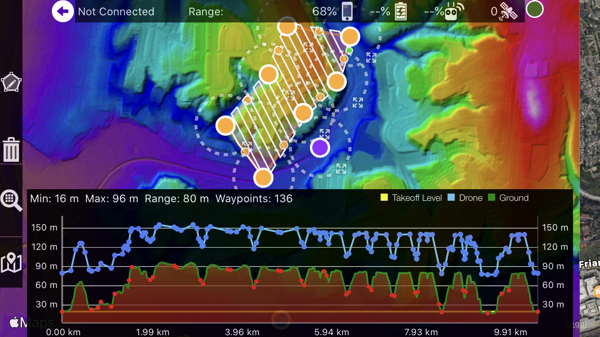

Mission planning · Mobile apps · Data pipelines
Mission software for real-world drone work
I build the apps and services that capture, label, and move aerial data. Map Pilot Pro ships with code I maintain across iOS and Android, while custom utilities handle RSI routing, KMZ exporting, and AI-ready pipelines.

Terrain-aware planning keeps AGL constant.

Simulator views used to debug SDK behavior.
Recent Roles
Drone Lead – Change Aerial
Python, GIS, Web- Repeat Station Image (RSI) planning using historical flights + KMZ assets.
- Route optimizers that respect utility clearance envelopes.
- Image registration services that feed AI model training.
Android & iOS Lead – Drones Made Easy
Swift, Kotlin, C++- Mission planning, terrain clipping, and live telemetry overlays.
- On-device preview stitching for rapid QA after landing.
- Subscription, login, and storage flows backed by REST APIs.
Platform Highlights
Screens and workflows currently in production.
Terrain-aware path that hugs the DEM while holding AGL.

RSI plan overlaying legacy imagery for target re-acquisition.

Digital elevation model pipeline feeding mission generation.
Mission simulator matching SDK calls before wheels up.
Tech Stack
Languages & Platforms
Practices
Looking for a mission software partner?
I can extend existing applications, build custom utilities, or help architect the data layer for a new program. Send SDK details and target drones to get started.